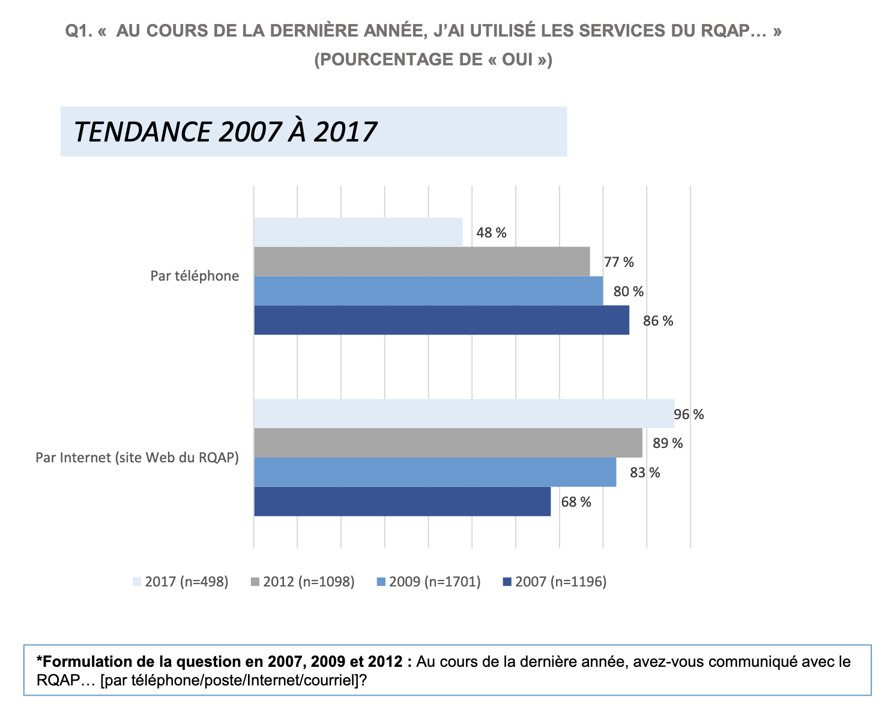
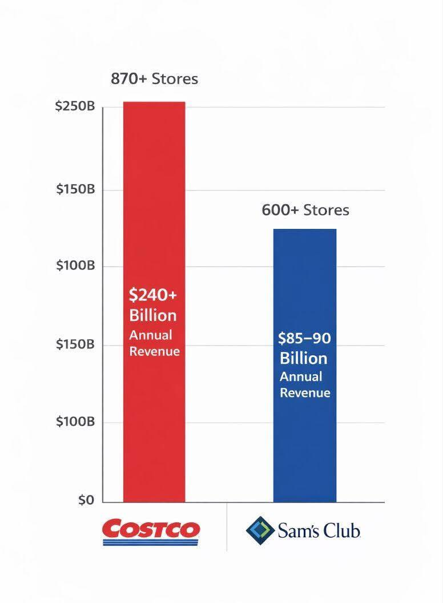

Chapitre II — Démarche méthodologique
On l'a dit, les méthodes quantitatives sont une manifestation de la méthode scientifique. La phase d'analyse elle-même (et dans une moindre mesure, la phase de communication) constitue l'essentiel de ce cours, mais on voit dans cette section les autres étapes de la démarche scientifique en analyse quantitative.
Identification d'un sujet de recherche
La formulation d'une question de recherche claire et précise est la première étape cruciale de toute étude quantitative. Une bonne question de recherche doit être :
- Spécifique : Éviter les questions trop larges ou vagues,
- Mesurable : Les concepts doivent pouvoir être quantifiés,
- Réaliste : Faisable avec les ressources disponibles,
- Pertinente : En lien avec les connaissances existantes,
- Originale : Apportant une contribution nouvelle au domaine.
Question vague : "Les étudiants sont-ils stressés ?"
Question précise : "Quel est le niveau moyen de stress perçu (mesuré sur une échelle de 1 à 10) chez les étudiants de première année de cégep pendant la période d'examens finaux, et ce niveau diffère-t-il selon le programme d'études ?"
La deuxième formulation spécifie la population (étudiants de première année de cégep), la variable à mesurer (stress sur échelle 1-10), le moment (période d'examens), et une variable comparative (programme d'études).
On peut, au premier abord, distinguer deux types de questions de recherche : celles qui cherchent simplement à faire une observation, mesurer un concept, pour lesquelles on a un objectif de recherche, et celles qui cherchent à établir des relations entre plusieurs concepts, ou vérifier une "explication", pour lesquelles on établit une hypothèse, l'objectif étant de vérifier ou invalider cette hypothèse.
Une hypothèse est une proposition testable (donc précise) qui suggère une relation entre deux ou plusieurs variables. Elle est formulée avant la collecte des données et sert de base à l'analyse statistique.
Dans le cadre de la méthode scientifique, et pour un but de recherche explicatif, la formulation de l'hypothèse à l'avance est une étape cruciale. D'une part, le contenu de l'hypothèse informe la construction de l'expérience et la collecte des données. D'autre part, formuler l'hypothèse à l'avance permet au chercheur de ne pas être influencé par les données lors de la formulation de l'hypothèse, ce qui pourrait biaiser l'analyse. En effet, il est toujours facile de formuler une hypothèse en ayant vu les données, mais ce qui permet de décider de la validité d'une hypothèse, c'est sa capacité à prédire des résultats avant de les voir.
Nous verrons plus tard dans ce cours comment tester formellement des hypothèses à l'aide de tests statistiques. Nous verrons également comment sans formuler d'hypothèse à l'avance, on prend le risque de "trouver" des relations qui n'existent pas réellement dans les données.
En fait, quand on teste une hypothèse, on compare deux hypothèses alternatives : l'hypothèse nulle (notée $H_0$) et l'hypothèse alternative (souvent notée $H_a$). L'hypothèse nulle est généralement une affirmation de "non-effet" ou "non-relation", tandis que l'hypothèse alternative est ce que le chercheur cherche à montrer. Par exemple, si l'on veut tester si un nouveau médicament est efficace, l'hypothèse nulle pourrait être "le médicament n'a pas d'effet sur la maladie", tandis que l'hypothèse alternative serait "le médicament améliore la condition des patients". Dans certains cas, quand des connaissances existent déjà sur le sujet, l'hypothèse nulle peut être plus spécifique que "pas de relation" et l'hypothèse alternative en constitue une version qu'on espère plus précise. Par exemple, on peut déjà savoir qu'il existe une relation entre deux variables, mais on veut tester si cette relation est positive ou négative.
II.2 Opérationnalisation et outils de collecte des données
II.2.1 Opérationnalisation
L'opérationnalisation consiste à transformer des concepts abstraits en variables concrètes et mesurables. C'est le processus qui permet de passer de l'idée théorique à la mesure empirique.
Par exemple, pour décider des directions à suivre dans une politique de santé publique, on pourrait avoir envie de mesurer "l'accès aux soins". Tel quel, ce concept est trop vague pour pouvoir être mesuré. Il faut donc choisir quel sens quantitatif on donne à ce concept. On peut choisir de l'opérationnaliser comme :
- le "nombre de centres de santé",
- la "fréquence des visites médicales",
- le "temps de trajet pour se rendre à l'hôpital le plus proche", etc.
On peut également choisir de combiner plusieurs de ces aspects en un indice composite.
Cependant, chacun des points précédents n'est pas encore assez précis : la "fréquence des visites médicales" doit être précisée. Quelle période de temps ? Quel type de visites médicales retient-on ? Veut-on mesurer la (sur)charge de travail des médecins, auquel cas on compte les visites par médecin, ou la facilité à voir un médecin, auquel cas on compte les visites par habitant ? Les mêmes questions se posent pour les autres aspects proposés. Enfin, si on choisit de créer un indice composite, comment combiner ces différents aspects ? Toutes ces décisions doivent être prises et justifiées lors de l'opérationnalisation.
L'opérationnalisation est le processus de décision et de définition des aspects concrets qui permettront de mesurer ou d'observer un concept théorique.
Une opérationnalisation correcte d'une question en un protocole de mesure vise deux objectifs fondamentaux :
- Validité : La mesure doit refléter fidèlement le concept qu'elle est censée représenter.
- Fidélité : La mesure doit être cohérente et reproductible dans le temps et entre différents observateurs.
Validité
Dans certains cas, il est très facile d'obtenir une mesure valide : la taille ou l'âge d'une personne, son revenu annuel, la quantité d'outils retrouvés sur des sites archéologiques, etc., peuvent être mesurés directement.
Le plus souvent, on cherche en science humaine à discuter des réalités humaines plus compliquées : par exemple, l'effet de la beauté sur la réussite professionnelle1, la relation entre salaire et confiance pour le futur, les retombées économiques du REM...
La chose que l'on veut mesurer dans ces cas n'est pas directement accessible : on mesure à la place des quantités que l'on juge indicatives de la quantité d'intérêt.
Même si la validité de la mesure est rarement parfaite, car les concepts étudiés sont souvent complexes, il est important de savoir justifier l'effet des choix d'opérationnalisation sur la validité de la mesure.
Je suis votre professeur, et je veux évaluer votre compréhension du cours. Je ne peux pas mesurer directement votre "compréhension", mais je peux mesurer vos résultats aux examens, que je considère comme un indicateur de votre compréhension. Cependant, si je choisis de mettre des exercices de calcul différentiel dans l'examen d'analyse quantitative, la validité de ma mesure sera faible, car la capacité à faire du calcul différentiel n'est pas un bon indicateur de votre compréhension de l'analyse quantitative.
Dans le cas d'un cours, on considère souvent par défaut que l'enseignant sait préparer une évaluation pertinente. Cependant, il arrive que les élèves se plaignent de la difficulté d'un examen, ou qu'il contienne un sujet non vu en classe. Dans ce cas, les élèves remettent en question la validité de l'indicateur "note d'examen" pour mesurer leur compréhension du cours.
Fidélité
Il est naturel de vouloir qu'un instrument de mesure, appliqué deux fois dans les mêmes conditions, donne le même résultat. La fidélité d'un instrument de mesure est une mesure de sa cohérence et permet de s'assurer que les différentes mesures sont comparables entre elles. Pour cela, il est souvent nécessaire d'être précis et explicite dans la définition des procédures de mesure.
(Exemple fictif) On veut mesurer l'optimisme concernant l'économie mondiale chez les jeunes adultes. On crée un questionnaire permettant de mesurer ce concept. On communique ensuite ce questionnaire le 21 décembre à 1000 jeunes adultes canadiens et 1000 jeunes adultes australiens. On répète l'expérience le 21 juin de l'année suivante, en utilisant le même questionnaire et la même procédure.
On note que les Canadiens sont en moyenne plus confiants lors de la seconde mesure, tandis que les Australiens sont en moyenne moins confiants.
Le fait que les deux groupes aient des évolutions opposées alors qu'ils sont exposés aux mêmes événements économiques mondiaux suggère que le questionnaire utilisé n'est pas fidèle : il est sensible à des facteurs externes non contrôlés (par exemple, la saison, le climat, les événements locaux, etc.) et ne permet pas de mesurer de manière cohérente l'optimisme économique. Peut-être que l'été rend optimiste et que les variations opposées viennent de la différence de saisons ?
Il faut faire attention à concevoir un protocole de mesure qui, autant que possible, ne dépend que du concept que l'on veut mesurer et de la population (ou échantillon) étudiée, et pas d'autres facteurs externes. Cela mène par exemple à vérifier que les mesures effectuées par différents observateurs donnent des résultats similaires (fidélité inter-juges), ou que les mesures répétées dans le temps sont cohérentes (fidélité test-retest).
Dans l'examen du ministère, si les notes mises par un correcteur sont systématiquement plus élevées que celles d'un autre, la fidélité inter-juges est faible. Pour améliorer cette fidélité, on peut donner des consignes de correction précises aux correcteurs et appliquer une modération aux notes d'un groupe de copies.
Être fidèle ne garantit pas d'être valide, et inversement. Par exemple, se peser avec une balance dont la tare n'est pas faite donne des mesures fidèles, mais pas valides. De même, les mesures phrénologiques (mesure des bosses sur le crâne) étaient considérées comme fidèles (plusieurs observateurs mesuraient les mêmes bosses de la même manière), mais pas valides (elles ne mesuraient pas réellement les traits de personnalité).
La validité d'un test est souvent plus difficile à établir que sa fidélité, pour laquelle on peut appliquer "réflexivement" les méthodes de l'analyse quantitative : nous y reviendrons.
II.2.2 Comment opérationnaliser un concept ?
La réponse dépend fortement de la question de recherche, du concept à mesurer, mais aussi des moyens de l'étude et des restrictions qui l'encadrent. Cependant, en général, on peut partir du principe qu'opérationnaliser, c'est décomposer. Si la question de recherche s'intéresse à un domaine très restreint, on peut souvent transformer directement la question en une variable mesurable.
On s'intéresse à l'incidence du diabète dans la population québécoise. Une manière raisonnable de l'opérationnaliser est de calculer le taux de personnes diagnostiquées diabétiques dans un échantillon représentatif de la population. Ici, le concept "incidence du diabète" est suffisamment précis pour être directement mesuré.
Dans de nombreux cas pratiques, le concept étudié est plus complexe (au sens de composé de plusieurs aspects). Dans ce cas, il faut décomposer le concept en plusieurs aspects plus concrets, puis définir comment mesurer chacun de ces aspects.
On s'intéresse à la "réussite scolaire" des étudiants universitaires. Ce concept est complexe et peut inclure plusieurs dimensions, telles que les notes académiques, la ponctualité, l'engagement dans les activités parascolaires et l'opinion des professeurs. Pour opérationnaliser ce concept, on peut définir les aspects suivants :
- Notes académiques : Mesurées par la moyenne générale ramenée sur 100.
- Ponctualité : Mesurée par le nombre de retards ou absences non justifiées. On décide de pondérer chaque absence non justifiée à un cours comme 2 retards.
- Engagement parascolaire : Mesuré par le nombre d'heures consacrées aux activités étudiantes par semestre.
- Opinion des professeurs : À chaque bulletin semestriel, on classe les appréciations des professeurs en 3 catégories : "positif", "négatif", "neutre", et on calcule un $\text{score d'appréciation} = \frac{\text{Nombre de positifs} - \text{Nombre de négatifs}}{\text{Nombre total d'appréciations}}$.
Chaque aspect est lui-même opérationnalisé en une variable mesurable, permettant une évaluation plus complète de la réussite scolaire que la simple moyenne générale.
Notons qu'on a effectué de nombreux choix : le nombre d'aspects retenus, la mesure de chacun, l'importance relative consacrée aux absences par rapport aux retards, etc.
Comme on le voit dans l'exemple précédent, lorsqu'on opérationnalise un concept, il est souvent utile de le décomposer en dimensions (aspects ou facettes du concept) et d'associer à chaque dimension un ou plusieurs indicateurs (mesures concrètes). Dans l'exemple précédent, on a 4 dimensions ayant chacune 1 indicateur et le résultat final est un ensemble de 4 variables mesurables. Cependant, dans certains cas, on peut avoir envie de combiner plusieurs indicateurs en un indice composite, par exemple pour pouvoir comparer globalement les données entre elles.
En 1990, le Programme des Nations Unies pour le Développement (PNUD) a décidé d'opérationnaliser le concept de développement humain. Le choix a été fait de décomposer ce concept en trois dimensions : santé, éducation et revenu. Pour chaque dimension, le PNUD a choisi des indicateurs spécifiques :
- Santé : 1 indicateur (à partir de l'espérance de vie à la naissance $\mathbf{e}$),
- Éducation : 2 indicateurs (durée de scolarisation moyenne $\mathbf{d_m}$, durée de scolarisation attendue $\mathbf{d_a}$),
- Revenu : 1 indicateur (revenu national brut par habitant à parité de pouvoir d'achat en dollars américains de 2017 $\mathbf{r}$).
Ces dimensions mesurent des aspects disparates du développement humain : on les utilise pour calculer un unique indice composite, l'Indice de Développement Humain (IDH).
D'abord, chaque indicateur est tronqué entre une valeur minimale et une valeur maximale (par exemple l'espérance de vie est bornée entre 20 et 85 ans et on calcule $\mathbf{e}' = \max(20, \min(\mathbf{e}, 85))$). Les valeurs minimales et maximales pour chaque indicateur sont :
$0 \leq \mathbf{d_m} \leq 15$ (années), $0 \leq \mathbf{d_a} \leq 18$ (années), $100 \leq \mathbf{r} \leq 75000$ (USD).
Ensuite, chaque indicateur est normalisé entre 0 et 1 selon la formule :
$$I_{dimension} = \frac{valeur - valeur_{min}}{valeur_{max} - valeur_{min}}$$
Pour l'éducation, on fait la moyenne des deux indicateurs normalisés pour obtenir un seul indicateur d'éducation.
Enfin, l'indice de développement humain (IDH) est calculé comme la moyenne géométrique des trois indicateurs normalisés :
$$\text{IDH} = (I_{sante} \times I_{education} \times I_{revenu})^{1/3}$$
Cet indice composite permet de comparer le niveau de développement humain entre différents pays de manière standardisée.
En résumé, pour opérationnaliser un concept, on suit généralement les étapes suivantes :
- Identifier le concept à étudier.
- Définir précisément ce que le concept signifie dans le contexte de l'étude et (si nécessaire) le décomposer en dimensions ou aspects plus concrets.
- Choisir des indicateurs mesurables pour chaque dimension ou pour le concept global.
- Spécifier l'échelle de mesure et l'unité de chaque indicateur.
- (Selon le cas) Définir comment combiner plusieurs indicateurs en un indice composite.
À chaque étape, on prend le temps de justifier les choix faits en termes de validité et de fidélité étant donné les objectifs et les contraintes de l'étude.
À la fin du processus d'opérationnalisation, on doit disposer d'une liste claire des informations que l'on veut mesurer pour chacune des unités statistiques étudiées, ainsi que leurs unités de mesure. Chaque indicateur mesuré sur un des sujets de l'étude forme ce que l'on appelle une variable2. On a également un plan clair de la façon dont on va combiner (ou pas) ces variables. Il reste à les récolter.
II.2.3 Sélection des outils de collecte
Une fois les variables opérationnalisées, il faut concevoir les instruments qui permettront de collecter les données.
Dans certains cas, on est chanceux, et tout ou partie des données voulues existe déjà. On parle de données secondaires, par opposition aux données primaires, qui sont collectées spécifiquement pour l'étude en cours. Dans ce cas, "l'outil de collecte" est le protocole d'extraction de ces données des bases où elles sont conservées.
Bien que simple3 d'un point de vue logistique, l'utilisation de données existantes impose souvent des contraintes sur les variables disponibles et leur qualité. Si deux (ou plus) jeux de données sont combinés, il faut aussi s'assurer de la compatibilité des formats et définitions, des populations étudiées, etc. Il est fréquent qu'à la fois des données primaires et secondaires soient utilisées dans une même étude, par exemple pour compléter des données existantes ou pour les valider, ou, a minima, pour les comparer.
Imaginons que l'on veuille estimer le nombre de personnes de plus de 30 ans assistant à un concert. On peut utiliser les données de billetterie, qui contiennent le nombre de billets vendus. Cependant, ces données ne contiennent pas l'âge des acheteurs. On décide de créer un outil de collecte : à l'entrée du concert, un enquêteur interroge aléatoirement 100 personnes sur leur âge (une seule question, variable quantitative). On calcule ensuite la proportion de personnes de plus de 30 ans dans cet échantillon, et on l'applique au nombre total de billets vendus pour estimer le nombre total de personnes de plus de 30 ans assistant au concert.
Lorsque les données n'existent pas, il y a plusieurs cas de figure. Soit les instruments de collecte existent déjà (par exemple, des questionnaires standardisés pour mesurer la dépression) mais n'ont pas encore été appliqués à la population d'intérêt, soit il faut créer de nouveaux outils de collecte.
Dans ce dernier cas, il faut créer des outils de collecte adaptés aux variables définies lors de l'opérationnalisation ainsi qu'au type d'unités statistiques auxquelles on s'intéresse4.
Outils de collecte
Analyse de documents — Extraction systématique d'informations à partir de sources écrites, visuelles ou audio. Par exemple, un historien peut analyser des lettres anciennes pour extraire des données sur les relations sociales à une époque donnée. Dans le cadre de l'analyse quantitative, il est important de définir une grille d'analyse claire et structurée pour extraire les données de manière cohérente à partir des documents. Bien que l'analyse de documents soit souvent nécessaire, le volume de données demandé pour une analyse quantitative peut rendre cette tâche fastidieuse si elle est faite à la main, surtout si les documents sont nombreux ou complexes. Il arrive donc que l'analyse de documents soit menée programmatiquement, voire à l'aide de techniques d'intelligence artificielle. Pour s'assurer de données fiables, ces méthodes automatisées limitent souvent les nuances de l'analyse, par exemple en se limitant à compter la fréquence d'apparition de certains mots ou expressions, ou en classant les documents dans des catégories prédéfinies.
Questionnaires — Ensemble de questions structurées posées aux sujets de l'étude pour recueillir des données sur leurs opinions, attitudes, comportements ou caractéristiques. Les questionnaires sont un outil de collecte de données très courant en sciences humaines et sociales, car ils permettent de collecter rapidement des données auprès d'un grand nombre de personnes. Ils peuvent être administrés en personne, par téléphone, par courrier ou en ligne.
On distingue deux types de questions dans les questionnaires :
- Questions fermées (le plus souvent et le plus facile à traiter) :
- Questions dichotomiques : réponses binaires (oui/non, vrai/faux).
- Questions à choix multiples : plusieurs options de réponse, dont une ou plusieurs peuvent être sélectionnées.
- Échelles de Likert : échelles de réponse ordonnées, souvent utilisées pour mesurer les attitudes ou les opinions, allant de "Pas du tout d'accord" à "Tout à fait d'accord".
- Questions à échelle de fréquence, de qualité, etc.
- Questions à échelle numérique : les répondants choisissent un nombre sur une échelle (par exemple, de 1 à 10) pour indiquer leur niveau d'accord, de satisfaction, etc.
- Questions à échelle de classement : les répondants classent une liste d'options selon un ordre de préférence ou d'importance.
- Questions à réponse numérique : les répondants fournissent une valeur numérique (par exemple, leur âge, le nombre de livres lus par mois, etc.).
- Questions ouvertes : réponses libres, ensuite codées pour analyse. Bien qu'il soit possible de mener une étude quantitative à partir de questions ouvertes, la variété possible des réponses fait souvent préférer les questions fermées, qui sont plus faciles à analyser quantitativement.
Grilles d'observation — Formulaires standardisés remplis par le chercheur pour enregistrer systématiquement des comportements ou événements observés. On peut voir les grilles d'analyse de documents comme un cas particulier de grilles d'observation. Par exemple, un chercheur étudiant le comportement de la foule lors d'un événement sportif peut utiliser une grille d'observation pour enregistrer des données telles que le nombre de personnes présentes, les types de comportements observés (applaudissements, chants, etc.), et les réactions à différents moments du match.
Tests standardisés — Instruments validés mesurant des capacités, aptitudes ou traits. Souvent, la construction de ces tests est un projet de recherche en soi, nécessitant des études préliminaires pour établir leur validité et fidélité. Une fois la qualité du test établie, il peut être utilisé dans d'autres études pour mesurer le même concept de manière fiable.
Entretiens structurés — On définit un protocole d'entretien : on a des questions prédéfinies posées de manière uniforme à tous les participants, et éventuellement un arbre de décision pour guider les questions en fonction des réponses.
II.3 Collecte des données
Une fois les outils de collecte définis, il reste à procéder à la collecte des données : appliquer les outils de mesure à chaque unité statistique de l'étude. Dans le cas idéal, on mesure toutes les unités de la population d'intérêt : on parle de recensement. Cependant, cela est souvent impossible en pratique, pour des raisons de coût, de temps ou de faisabilité. On utilise alors des techniques d'échantillonnage pour sélectionner un sous-ensemble dont la composition, pour les mesures qui nous intéressent au moins, reflètent celle de la population. On dit dans ce cas que l'échantillon est représentatif.
II.3.1 Recensement
Dans son sens habituel, un recensement d'une population signifie la collecte des données démographiques et socio-économiques de tous les individus d'une population donnée. Par exemple, le recensement de la population canadienne, effectué tous les 5 ans par Statistique Canada, vise à collecter des informations détaillées sur chaque résident du pays. Les données recueillies comprennent des informations sur l'âge, le sexe, la langue parlée, le niveau d'éducation, l'emploi, le revenu, etc. Ces données sont cruciales pour la planification des politiques publiques, la répartition des ressources et la compréhension des tendances démographiques.
Dans le langage des méthodes quantitatives, le mot recensement désigne plus généralement la collecte des données pour toutes les unités statistiques d'une population donnée. Par exemple, un archéologue peut décider de recenser tous les artefacts trouvés sur un site donné ou un historien peut décider de recenser tous les documents d'une archive spécifique.
Le recensement est la méthode de collecte de données la plus complète, car elle permet d'obtenir des informations sur chaque unité de la population. Si le recensement est possible, il va nécessairement fournir les données les plus précises et complètes pour l'analyse quantitative. Cependant, mener un recensement complet peut être infaisable en pratique, pour diverses raisons. On peut au moins considérer les suivantes :
- Coût : Le recensement peut être très coûteux en termes de temps, d'argent et de ressources humaines. Par exemple, le recensement national canadien coûte des centaines de millions de dollars à chaque édition.
- Temps : Le recensement peut prendre beaucoup de temps, surtout si la population est grande ou dispersée géographiquement. Par exemple, le recensement national canadien prend plusieurs mois pour être complété.
- Accessibilité : Certaines unités de la population peuvent être difficiles à atteindre ou à mesurer. Par exemple, certaines populations marginalisées ou isolées peuvent être difficiles à inclure dans un recensement.
- Perturbation : Le processus de recensement peut perturber la population étudiée, surtout si la collecte de données est intrusive ou exigeante. Par exemple, un recensement médical peut nécessiter des examens physiques ou des tests invasifs. Dans le cas d'un recensement archéologique, le processus de fouille peut endommager les artefacts ou les contextes stratigraphiques : on pourrait vouloir par exemple broyer des dents trouvées dans un site néolithique pour détecter la présence de la peste : on évite en général de broyer toutes celles qu'on trouve.
II.3.2 Échantillonnage
L'échantillonnage est le processus de sélection d'un sous-ensemble représentatif de la population. Il existe plusieurs méthodes, chacune avec ses avantages et limites. La qualité de l'échantillonnage influence directement la validité des conclusions tirées de l'analyse quantitative. Toutes choses étant égales par ailleurs, plus un échantillon est grand, plus la précision des estimations sera bonne. Dans le cas idéal, on prend comme échantillon la population entière et les conclusions sont parfaites. Ce n'est pas souvent possible en pratique, pour des raisons de coût, de temps ou de faisabilité et il appartient au chercheur de trouver un équilibre entre les ressources disponibles de son étude et la précision désirée, en fonction de la variabilité de la population étudiée.
(Exemple fictif) Dans un contexte de difficulté du financement des universités en France, deux instituts de sondage A et B veulent estimer la proportion de la population française favorable à une augmentation des frais d'inscription universitaires.
- L'institut A décide de mener un sondage par téléphone en appelant au hasard 1 000 numéros de téléphone fixes.
- L'institut B décide de mener un sondage en ligne en interrogeant 1 000 personnes passant sur la place de la Sorbonne.5
Après analyse, l'institut A rapporte 27 % de réponses favorables, tandis que l'institut B rapporte 12 % de réponses favorables. Dans les deux cas, les méthodes d'échantillonnage induisent un biais sur les réponses :
- L'institut A n'a pas inclus les personnes sans téléphone fixe (jeunes, personnes à faible revenu, etc.), qui pourraient être plus hostiles à une augmentation des frais d'inscription.
- À l'inverse, les étudiants, qui ont intérêt à garder les frais bas, sont très probablement surreprésentés dans l'échantillon de l'institut B.
Évidemment, dans la réalité, les instituts de sondage font tout leur possible pour minimiser ces biais, mais cet exemple illustre l'importance du choix de la méthode d'échantillonnage.
L'échantillonnage est l'ensemble des techniques utilisées pour sélectionner un échantillon à partir d'une population, de manière que les caractéristiques de l'échantillon reflètent celles de la population.
II.3.3 Méthodes d'échantillonnage probabilistes
Le principe fondamental des méthodes d'échantillonnage probabilistes est que chaque unité de la population a une probabilité connue et non nulle d'être incluse dans l'échantillon. Cela permet de minimiser les biais de sélection et de garantir une forte probabilité que l'échantillon soit représentatif de la population. De plus, les méthodes probabilistes permettent d'estimer la marge d'erreur et la précision des résultats obtenus à partir de l'échantillon.
En contrepartie de cette précision, la majorité des méthodes d'échantillonnage probabilistes nécessitent une liste complète des unités de la population, appelée cadre ou base d'échantillonnage. Cette liste permet de sélectionner les unités de manière aléatoire selon la méthode choisie. On suppose que pour chaque unité de la population, on peut récolter les données voulues (joindre la personne, accéder à l'artéfact pour le mesurer, lire le document, etc.).
Aléatoire simple — On numérote chaque unité de la population, puis on utilise un générateur de nombres aléatoires pour sélectionner les unités (distinctes) à inclure dans l'échantillon. Chaque unité a la même probabilité d'être sélectionnée.
- Avantage : Simple, non biaisé, bonnes propriétés théoriques si l'échantillon est assez grand.
- Inconvénient : Nécessite une liste complète de la population, et de pouvoir effectivement joindre n'importe quelle unité.
Je veux tester que les boîtes de nourriture pour bébés dans mon stock de 838 boîtes sont de bonne qualité. Je sélectionne aléatoirement 10 boîtes parmi celles-ci que je vais examiner (pour simplifier, on suppose qu'elles portent des numéros de série consécutifs qui commencent à partir de 1). Je génère 10 nombres aléatoires entre 1 et 838 (sans répétition) :
$$771, 114, 295, 259, 136, 335, 553, 813, 76, 562.$$
Je vais examiner les boîtes portant ces numéros.
Systématique — Étant donné une population de taille $N$ et une taille d'échantillon désirée $n$, on calcule le pas d'échantillonnage (ou intervalle de sélection) $k = \lfloor\frac{N}{n}\rfloor$ (on prend la partie entière si nécessaire). On choisit un point de départ aléatoire6 $i$ entre 1 et $k$, puis on sélectionne chaque $k^e$ unité à partir de ce point de départ. Les unités qui constituent l'échantillon sont donc :
$$i, i + k, i + 2k, i + 3k, ..., i+(n-1)k.$$
- Avantage : Plus facile à mettre en œuvre que l'aléatoire simple. De plus, si la liste des unités est ordonnée de manière pertinente (par exemple, par région géographique), cette méthode peut améliorer la représentativité de l'échantillon. Enfin, si on ne connaît pas à l'avance la taille de la population, et qu'on décide à l'avance de la proportion d'unités à inclure dans l'échantillon, cette méthode permet de s'adapter dynamiquement à la taille réelle de la population.
- Inconvénient : Risque de biais si la liste a une structure périodique, par exemple si on a affaire à des données temporelles qui représentent les jours de la semaine et qu'on choisit un intervalle multiple de 7.
Le jardin botanique de Montréal veut connaître le niveau de satisfaction des visiteurs des jardins dans la semaine qui suit l'installation d'une nouvelle exposition florale. On veut un échantillon qui représente au moins 1/100 des visiteurs de la semaine, mais on ne sait pas à l'avance combien de visiteurs il y aura. On décide donc d'utiliser un échantillonnage systématique : on choisit un pas $k=100$ et un point de départ aléatoire entre 1 et 100, disons 37. On interroge donc le $37^e$, $137^e$, $237^e$, ... visiteurs qui entrent dans le jardin pendant la semaine. Si au total 12 438 visiteurs entrent dans le jardin cette semaine-là, on aura interrogé exactement 125 personnes (le $37^e$ jusqu'au $12\,437^e$).
Stratifié — On divise la population en sous-groupes homogènes appelés strates (par exemple, par sexe, âge, région géographique, etc.). Ensuite, on effectue un échantillonnage aléatoire simple ou systématique au sein de chaque strate. La taille de l'échantillon dans chaque strate peut être proportionnelle à la taille de la strate dans la population (échantillonnage proportionnel) ou fixe (échantillonnage non proportionnel).
- Avantage : Assure une représentation adéquate des sous-groupes importants, améliore la précision des estimations.
- Inconvénient : Nécessite une connaissance préalable de la population pour définir les strates.
Je veux obtenir la moyenne de la taille des étudiants de deuxième session à André-Laurendeau. Je sais que la population totale est de 2000 étudiants, dont 1200 femmes et 800 hommes (nombres complètement inventés). Je sais que les femmes sont en moyenne plus petites que les hommes. Par commodité, je décide de prendre mon échantillon dans la classe d'analyse quantitative : en effet, les étudiants ne sont pas groupés par taille dans les classes et ma classe a toutes les chances d'être représentative de l'ensemble des étudiants. Malheureusement pour moi, j'ai autant d'hommes que de femmes dans ma classe : mon échantillon n'est pas représentatif de la population totale et une estimation de la taille moyenne basée sur cet échantillon sera biaisée (trop grande). Pour régler ce problème, je décide de faire un échantillonnage stratifié : je sélectionne aléatoirement 24 femmes et 16 hommes dans ma classe, ce qui correspond à la proportion de femmes et d'hommes dans la population totale. Mon échantillon est maintenant plus représentatif et mon estimation de la taille moyenne sera plus précise.
Cet exemple est une combinaison de deux modes d'échantillonnage : j'ai d'abord fait un échantillonnage par convenance (ma classe), puis un échantillonnage stratifié à l'intérieur de celle-ci.
Par grappes — La population est divisée en groupes naturels appelés grappes (par exemple, des quartiers, des écoles, des entreprises, les élèves d'une rangée dans une classe, etc.). Ensuite, un certain nombre de grappes sont sélectionnées aléatoirement et toutes les unités à l'intérieur des grappes sélectionnées sont incluses dans l'échantillon.
- Avantage : Plus économique et pratique pour les populations dispersées géographiquement.
- Inconvénient : Possiblement moins précis que les autres méthodes, car les unités à l'intérieur des grappes peuvent être plus similaires entre elles qu'avec le reste de la population.
Je veux estimer l'intérêt pour les mathématiques de l'ensemble des élèves d'André-Laurendeau. Plutôt que d'envoyer des questionnaires à des élèves choisis aléatoirement dans l'annuaire du cégep. Je veux un échantillon d'au moins une centaine de personnes, ce qui correspond à environ 4 classes. Je sélectionne donc aléatoirement 4 classes parmi toutes les classes du cégep, puis j'envoie le questionnaire à tous les élèves de ces classes. C'est un échantillonnage par grappes.
En examinant les résultats, je suis surpris de constater que l'intérêt pour les mathématiques est très élevé dans mon échantillon. En y réfléchissant, je réalise que j'ai accidentellement sélectionné 3 classes de sciences naturelles et seulement 1 de sciences humaines. La partie aléatoire de mon échantillonnage (le choix des grappes) porte sur un très petit nombre de grappes (4 classes), et le sujet de mon étude (l'intérêt pour les mathématiques) est fortement lié au type de classe. Mon échantillon n'est donc pas représentatif de l'ensemble des élèves du cégep et mon estimation de l'intérêt pour les mathématiques est biaisée (trop élevée).
Pour régler ce problème, je pourrais choisir plus de grappes, ou stratifier mon choix de grappes en fonction du type de classe (par exemple, choisir 2 classes de sciences naturelles et 2 de sciences humaines), mais le problème fondamental vient du fait que, par construction, les classes sont plus homogènes que l'ensemble des élèves du cégep sur le critère de l'intérêt pour les mathématiques.
Une question plus adaptée serait par exemple le temps de trajet domicile-école : les classes n'ont pas de raison d'être plus homogènes sur ce critère que l'ensemble des élèves du cégep.
Comme vous le voyez, les méthodes d'échantillonnage peuvent être combinées entre elles pour s'adapter aux contraintes pratiques de l'étude, en fonction des forces et faiblesses de chaque méthode.
Contexte : Étude sur 10 000 étudiants d'une université répartis dans 50 programmes
- Aléatoire simple : Tirer au sort 500 étudiants parmi les 10 000
- Systématique : Prendre 1 étudiant sur 20 dans la liste alphabétique
- Stratifié : Diviser par programme, puis échantillonner proportionnellement (si un programme représente 10 % des étudiants, il représentera 10 % de l'échantillon)
- Par grappes : Sélectionner aléatoirement 10 programmes, enquêter tous les étudiants de ces programmes
II.3.4 Méthodes d'échantillonnage non probabilistes
Contrairement aux méthodes probabilistes, les méthodes d'échantillonnage non probabilistes ne reposent pas sur le hasard pour sélectionner les unités de l'échantillon. Elles sont souvent utilisées lorsque la constitution d'une liste exhaustive de la population est impossible ou lorsque des contraintes pratiques l'imposent. Cependant, elles présentent un risque plus élevé de biais et ne permettent généralement pas de généraliser les résultats à l'ensemble de la population.
Échantillonnage par convenance — On sélectionne les individus les plus facilement accessibles ou disponibles (ex. : interroger les passants dans la rue, les étudiants présents en classe).
- Avantage : Simple, rapide, peu coûteux.
- Inconvénient : Risque élevé de biais, faible représentativité. Par exemple, si on veut mesurer la qualité nutritionnelle des repas à emporter, décider d'enregistrer les ventes d'une sandwicherie végan dans un quartier très fréquenté par des sportifs va probablement biaiser les résultats.
En psychologie expérimentale, il est courant d'utiliser des échantillons par convenance, souvent composés d'étudiants universitaires volontaires. Par exemple, un chercheur souhaitant étudier les effets de la privation de sommeil sur la mémoire peut recruter des étudiants de son université qui sont disponibles et intéressés à participer à l'étude. Bien que cette méthode soit pratique et économique, elle peut introduire des biais, car les étudiants universitaires peuvent ne pas être représentatifs de la population générale en termes d'âge, de mode de vie ou de santé.
Échantillonnage par choix raisonné (ou jugement) — Le chercheur choisit délibérément les unités jugées les plus pertinentes ou représentatives selon son expertise.
- Avantage : Permet de cibler des cas spécifiques ou typiques.
- Inconvénient : La subjectivité du chercheur a un fort impact, faible généralisabilité.
On cherche à établir un classement des destinations de vacances les plus accueillantes pour les Canadiens en hiver. On se poste dans un aéroport international canadien pendant la saison hivernale et on interroge des voyageurs. On leur demande d'abord s'ils ont visité plus de deux destinations différentes pour faire du tourisme au cours des cinq dernières années. Si oui, on leur demande de classer ces destinations en fonction de leur expérience d'accueil (hospitalité, services, etc.). On recueille ainsi des avis de voyageurs expérimentés, mais l'échantillon est biaisé vers les personnes qui voyagent fréquemment et qui ont les moyens de le faire.
Échantillonnage boule de neige — Utilisé pour des populations difficiles à atteindre, on demande à chaque participant de recommander d'autres personnes à inclure dans l'étude.
- Avantage : Utile pour accéder à des groupes cachés ou rares (ex. : minorités, réseaux sociaux).
- Inconvénient : Risque de biais d'homogénéité, car les personnes recrutées se ressemblent souvent.
Un journaliste souhaite évaluer la crédibilité d'une affirmation scientifique sur un sujet tellement spécifique qu'il lui est difficile de juger par lui-même si une personne est compétente pour la discuter. Il commence par interroger un chercheur dans le domaine général de la question et lui demande de lui recommander des spécialistes à contacter, auxquels il demande ensuite la même chose. En suivant ce processus, le journaliste construit progressivement un réseau de contacts d'experts dont il peut recueillir l'opinion générale.
Échantillonnage par quotas — On définit à l'avance des quotas à respecter pour certaines caractéristiques (sexe, âge, etc.) afin de refléter la structure de la population, puis on sélectionne les individus par une des autres méthodes non aléatoires jusqu'à remplir chaque quota. C'est l'équivalent non probabiliste de l'échantillonnage stratifié.
- Avantage : Permet de contrôler la composition de l'échantillon sur certains critères.
- Inconvénient : Sélection non aléatoire à l'intérieur des quotas, donc biais possible.
Les méthodes non probabilistes sont parfois inévitables, mais il faut être conscient de leurs limites et éviter de généraliser les résultats à l'ensemble de la population sans précautions.
II.4 Analyse des données
L'analyse elle-même est le sujet principal de ce cours, que l'on explorera en détails dans les chapitres suivants. Cependant, avant de plonger dans les méthodes statistiques, il est important de comprendre les étapes préliminaires cruciales qui garantissent la qualité et la fiabilité des résultats obtenus. Cette section présente un aperçu des principales étapes de l'analyse des données, depuis le nettoyage initial jusqu'à l'interprétation des résultats.
II.4.1 Nettoyage et préparation des données
Avant d'analyser les données, il est essentiel de les nettoyer et de les préparer. Cette étape, souvent sous-estimée, peut représenter jusqu'à 80 % du temps de la phase d'analyse. Heureusement pour nous, on supposera dans ce cours que les données sont déjà collectées et disponibles sous une forme exploitable (tableur, base de données, etc.). Cependant, il est rare que les données brutes soient prêtes à l'analyse sans un certain travail de préparation. Le nettoyage des données vise à identifier et corriger les erreurs, gérer les valeurs manquantes, et transformer les données pour les rendre cohérentes et adaptées aux analyses statistiques prévues.
| ID | Âge | Sexe | Note |
|---|---|---|---|
| 1 | 19 | M | 85 |
| 2 | 999 | F | 92 |
| 3 | 20 | m | -5 |
| 4 | 21 | F | |
| 5 | 18 | H | 78 |
$\xrightarrow{\text{nettoyage}}$
| ID | Âge | Sexe | Note |
|---|---|---|---|
| 1 | 19 | M | 85 |
| 2 | ND | F | 92 |
| 3 | 20 | M | ND |
| 4 | 21 | F | ND |
| 5 | 18 | M | 78 |
Problèmes identifiés :
- ID 2 : Âge = 999 (probablement code pour "manquant")
- ID 3 : Note = -5 (impossible)
- ID 4 : Note manquante
- ID 3, 5 : Codage incohérent du sexe (m vs M, H vs M)
On a choisi8 de remplacer les âges et notes manquantes par "ND" (Non Disponible) et de corriger le codage du sexe pour le rendre uniforme. On aurait pu choisir d'imputer les valeurs manquantes par la moyenne des âges et des notes, mais dans ce cas précis, vu le petit nombre de données, on préfère garder l'information de manque.
- Vérification de la cohérence : Détecter les erreurs de saisie, valeurs impossibles
-
Ex. : Âge négatif, note supérieure à 100, date de naissance future
-
Traitement des valeurs manquantes
- Suppression des observations incomplètes (si peu nombreuses)
- "Correction" : remplacement par la moyenne, médiane ou méthode plus sophistiquée. On utilise souvent l'anglicisme imputation.
-
Marquage explicite des valeurs manquantes (ex. : code "ND" pour Non Disponible)
-
Détection des valeurs aberrantes
- Identifier les valeurs extrêmes qui pourraient être des erreurs
-
Décider de les conserver, corriger ou exclure (avec justification)
-
Codage des variables
- Standardiser les formats (ex. : dates, texte)
- Si on traite les données par ordinateur, il peut être utile de transformer les réponses textuelles en codes numériques.
-
Créer des variables dichotomiques ("dummy") pour faciliter l'analyse. Par exemple pour la variable "Couleur préférée" avec les modalités "Rouge", "Bleu", "Vert", on crée trois variables binaires : "Préférence Rouge" (1 si Rouge, 0 sinon), "Préférence Bleu" (1 si Bleu, 0 sinon), "Préférence Vert" (1 si Vert, 0 sinon).
-
Transformation des variables
- Regrouper des catégories (ex. : âges en tranches d'âge)
- Créer de nouvelles variables (ex. : calculer l'IMC à partir de la taille et du poids)
-
Normaliser ou standardiser si nécessaire
-
Documentation
- Tenir un journal des modifications apportées
- Créer un dictionnaire des variables pour garder la trace des codages et transformations choisies.
Toute décision de nettoyage doit être documentée et justifiée. La suppression ou modification de données doit être faite avec précaution et transparence pour maintenir l'intégrité de la recherche.
II.4.2 Traitement statistique des données
On abordera en détail les différentes méthodes statistiques dans les chapitres suivants. De nombreuses techniques existent pour décrire, résumer, et analyser les données et le choix de la méthode dépend des objectifs de l'étude, du type de données et des hypothèses sous-jacentes.
II.4.3 Interprétation des mesures
Bien que certaines constructions statistiques soient intuitives (comme la moyenne ou la médiane), d'autres le sont moins (comme l'écart-type, les intervalles de confiance, les tests d'hypothèses, etc.). Il est crucial de comprendre non seulement comment calculer ces mesures, mais aussi comment les interpréter correctement dans le contexte de l'étude. Au cours des prochains chapitres, nous verrons en détail à quelles questions chaque mesure répond, comment les interpréter et quelles précautions prendre pour éviter les erreurs d'interprétation courantes.
II.5 Communication des résultats
Tout le travail effectué pour collecter, nettoyer, analyser et interpréter les données n'a de valeur que si les résultats sont communiqués de manière claire et efficace. La communication des résultats peut prendre plusieurs formes, en fonction du public-cible et des objectifs de la communication. Les chercheurs tendent à publier leurs résultats dans des articles scientifiques, tandis que les décideurs peuvent préférer des rapports exécutifs ou des présentations visuelles. Les instituts de sondage communiquent souvent leurs résultats via des infographies ou des communiqués de presse.
D'une façon générale, une bonne communication en analyse quantitative donne toutes les informations nécessaires pour que le lecteur puisse comprendre les résultats, évaluer leur validité, et les utiliser pour prendre des décisions éclairées. Cela inclut la description claire de la méthodologie utilisée, la présentation transparente des résultats, et de leur interprétation. En général, cela représente un volume d'information assez important et il est donc important de structurer la communication de manière logique et accessible.
La communication efficace des résultats statistiques eux-mêmes appelle souvent à utiliser des tableaux et graphiques de toutes sortes. Le choix des représentations utilisées dépend du type de données, des résultats à mettre en avant et du type de public visé. Par exemple, si les données sont naturellement ordonnées (comme des dates ou des revenus), on préférera les présenter dans le bon ordre dans une table ou choisir une représentation graphique qui reflète cet ordre. On consacrera un chapitre à l'organisation et à la présentation des données.
Voici un extrait du Rapport de sondage sur la satisfaction de la clientèle du régime québécois d'assurance parentale (RAQP), publié par le Ministère du Travail, de l'Emploi et de la Solidarité sociale en 2018.7

On y trouve :
- La question posée aux répondants au sondage
- Un titre exprimant ce que le graphique illustre.
- Un graphique clair et lisible, avec des couleurs distinctes pour chaque année de réponse, ainsi que les pourcentages exacts, où les données sont regroupées selon la catégorie de réponse.
- Une légende expliquant les couleurs utilisées et précisant la taille de l'échantillon à chaque année.
La méthodologie de collecte et d'analyse étant essentiellement commune à toutes les questions, ces informations sont présentées en début de rapport, qu'on ne reproduit pas ici.
La communication des interprétations des résultats est tout aussi importante. Il faut adapter le langage et le niveau de détail au public cible, en évitant le jargon technique lorsque cela est possible.
Voici l'interprétation accompagnant le graphique précédent dans le rapport du RAQP :
La prestation électronique de service est en croissance
La tendance observée depuis 2007 semble se poursuivre, c'est-à-dire que le mode téléphonique est de plus en plus délaissé au profit du Web. L'utilisation du téléphone pour accéder aux services du RQAP est passée de 86 % en 2007 à 48 % en 2017, tandis que l'utilisation d'Internet a augmenté de 68 % à 96 %.
La diminution de l'utilisation du mode téléphonique semble particulièrement importante de 2012 à 2017, puisqu'elle est passée de 77 % à 48 %. Une explication possible pourrait être que le questionnaire a été administré par Internet en 2017, alors qu'il l'avait été par téléphone lors des sondages précédents. Cela a pu susciter une réponse plus forte chez les utilisateurs réguliers du Web.
La principale conclusion est clairement énoncée, suivie d'une explication des tendances observées, et d'une réflexion critique sur les possibles biais introduits par la méthodologie de collecte.
Il faut faire attention à ne pas exagérer les conclusions tirées des données. Il est important de distinguer clairement entre corrélation et causalité, et de reconnaître les limites des analyses effectuées. Une communication honnête et transparente renforce la crédibilité des résultats et permet aux lecteurs de les interpréter correctement. Inversement, il ne faut pas non plus "sous-vendre" les résultats : avancés trop prudemment, ils peuvent être ignorés, alors que s'ils sont solides et bien interprétés, ils peuvent fournir des informations précieuses pour la prise de décision.
Le secrétaire à la Santé des États-Unis, Robert Kennedy Junior, a récemment fait retirer du site du centre pour le contrôle des maladies (CDC) les affirmations selon lesquelles les vaccins ne causent pas l'autisme au prétexte qu'aucune étude n'a prouvé que les vaccins ne peuvent pas causer l'autisme. Or, il est extrêmement rare qu'une étude puisse prouver une absence d'effet : tout au plus, une étude peut montrer que l'existence d'un effet est soit très improbable, soit que l'effet est très faible, mais cela ne prouve techniquement pas que l'effet n'existe pas. Cela est dû au fait que la méthode scientifique ne fonctionne par nature que sur ce qui peut être observé : on ne peut pas prouver l'inexistence de quelque chose, seulement l'absence d'observation de cette chose dans les conditions étudiées.
Dans ces conditions, "l'acceptabilité" des directives du secrétaire Kennedy repose sur l'ignorance du public sur le langage de la méthode scientifique. En dehors du contexte spécifique de la littérature scientifique, il est donc important de communiquer clairement que l'affirmation "les vaccins ne causent pas l'autisme" est aussi certaine qu'il est possible de l'être.
Pour le plaisir, voici un exemple extrême de mauvaise communication statistique.

Résumé du chapitre
Les étapes de la recherche quantitative
Opérationnalisation : Transformer le concept en mesure
Processus : Concept théorique $\rightarrow$ Dimensions $\rightarrow$ Indicateurs $\rightarrow$ Variables mesurables
Exemple : "Réussite scolaire"
- Dimensions : Notes académiques, ponctualité, engagement, retours des professeurs
- Indicateurs : Moyenne générale (0-100), absences non justifiées, heures en activités, score d'appréciation (-1 à +1)
Validité et fidélité : Fondamentaux de la mesure
| Validité | Fidélité |
|---|---|
| Mesure-t-elle réellement ce qu'on veut mesurer ? | La mesure est-elle cohérente et reproductible ? |
| Plus importante | Peut exister sans validité |
| Souvent difficile à établir | Plus facile à vérifier |
Outils de collecte des données
| Outil | Caractéristiques |
|---|---|
| Données secondaires | Données existantes (bases, registres, archives) |
| Questionnaires | Questions fermées/ouvertes ; rapide ; large échelle |
| Entrevues | Flexibilité ; détail ; consommateur de ressources |
| Observations | Comportements réels ; biais de l'observateur |
| Analyse de documents | Documents historiques, textes ; codification requise |
- Cherchez "effet de halo". ↩
- On reviendra bientôt en détail sur les types de variables possibles. ↩
- Et encore, c'est vite dit : la publication, le partage et l'interopérabilité des données n'a pas toujours été si simple qu'aujourd'hui. L'amélioration de cet état de fait est d'ailleurs une des raisons du succès récent des méthodes d'intelligence artificielle. ↩
- Un archéologue ne va pas créer un questionnaire à poser à des pointes de flèches en silex. ↩
- Où se situe la Sorbonne, une université parisienne très connue. ↩
- $i$ pour initial ↩
- Disponible ici : www.rqap.gouv.qc.ca/sites/default/files/documents/publications/RQAP_Rapport_sondage_clientele.pdf ↩
- Encore une fois, c'est un choix, et pas la seule possibilité. ↩